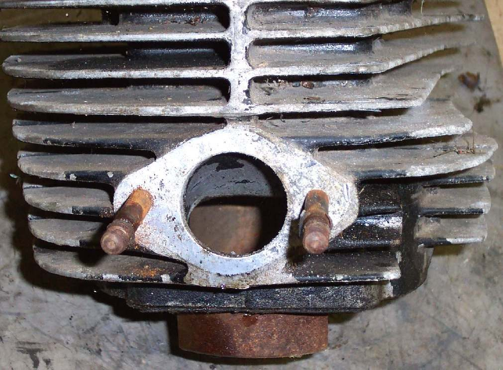

The intake manifold is the short pipe that joins the carburettor or throttle body to the cylinder head. It is often a rubber or rubber-and-metal part (the K-Light manual calls it the insulator) with an O-ring or gasket at the head. On many injected bikes the injector sits in it. A second rubber boot links the airbox to the carburettor or throttle body.
What it does
The manifold carries the fuel and air mix into the engine and keeps out unmeasured air. The rubber also stops engine heat and vibration reaching the carburettor. Rubber hardens and cracks with heat and age. A crack lets in extra air, which makes the mixture lean, mostly at idle.
Signs it is worn or failing
- Rough idle, hunting idle or high idle.
- Runs lean and hanging revs.
- Hard to start when cold.
- Visible cracks when the rubber is bent, or a loose clamp.
When to replace it
When it is cracked, hard, split or the clamp will not seal. Replace O-rings and gaskets whenever the carburettor, throttle body or head is removed, as the K-Light manual does after engine work.
What to match when buying
- Match make, model and year: length, angle and port size change the fit and the mixture.
- Check whether the injector hole and vacuum spigot match on injected bikes.
- Buy new O-rings and clamps. Poor rubbers can be hard from new or have flash on the sealing face.
Fitting notes
- Home job to find a leak: Find an intake air leak.
- Clean both faces. Tighten manifold bolts evenly so the flange is not bent.
- Make sure the carburettor or throttle body sits straight and fully in the rubber before tightening clamps.
- Old hard rubber can be softened for refitting. Heat gently with warm water or a hot air gun, and ease the carburettor in. Never pry hard, because the carburettor body is soft metal. See Remove and refit a carburettor.